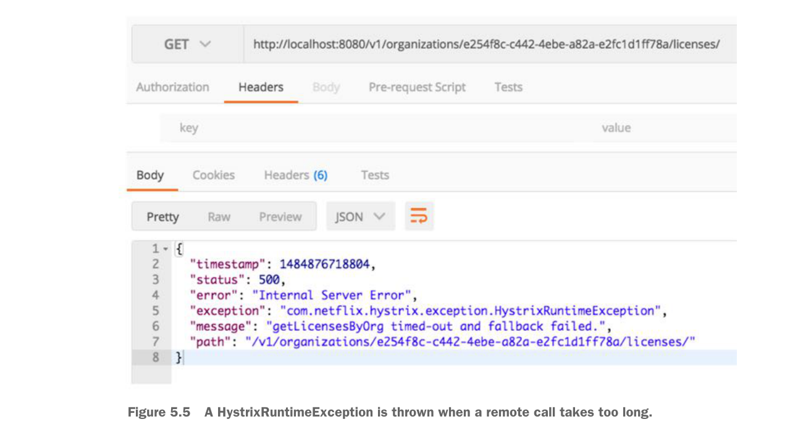

public List<License> getLicensesByOrg(String organizationId){
randomlyRunLong();
return licenseRepository.findByOrganizationId(organizationId);
}Nếu bạn gọi endpoint http://localhost/v1/organizations/e254f8c-c442-4ebe-a82a-e2fc1d1ff78a/licenses/ đủ nhiều lần, bạn sẽ thấy thông báo lỗi timeout được trả về từ licensing service. Hình 5.5 minh họa lỗi này.

HystrixRuntimeException được ném ra khi một lời gọi từ xa mất quá nhiều thời gian.
Giờ đây, với annotation @HystrixCommand đã được đặt, licensing service sẽ ngắt một lời gọi tới cơ sở dữ liệu nếu truy vấn mất quá nhiều thời gian. Nếu các lời gọi cơ sở dữ liệu mất hơn 1.000 mili giây để thực thi trước khi mã bọc Hystrix hết thời gian chờ, lời gọi dịch vụ của bạn sẽ ném ra ngoại lệ com.netflix.hystrix.exception.HystrixRuntimeException.
5.5.1 Đặt timeout cho lời gọi tới organization microservice
Ưu điểm của việc dùng annotation ở cấp phương thức để gắn hành vi circuit breaker cho các lời gọi là bạn dùng cùng một annotation dù bạn đang truy cập cơ sở dữ liệu hay gọi một microservice.
Ví dụ, trong licensing service, bạn cần tra cứu tên của organization liên kết với license. Nếu bạn muốn bọc lời gọi tới organization